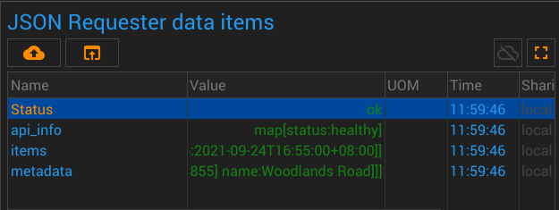
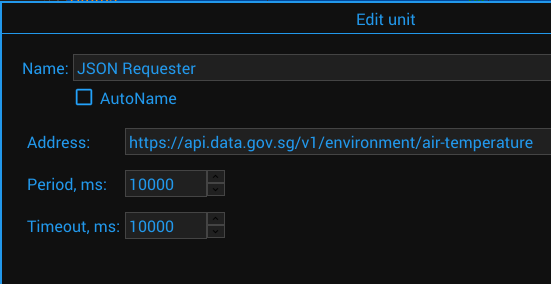

{#header.html#}
{%title=Gazer - Unit - JSON Requester%}
{%description=Gazer - Unit for receiving data via HTTP protocol in JSON format%}
JSON Requester Unit
Description
Unit for receiving data via HTTP protocol in JSON format
Parameters
Timeout
Timeout in milliseconds to wait for each reply.
Period
The period between sensor activities
Data Items
the set of elements depends on the server response
Pictures
Screenshot

Configuration

{#bottom.html#}